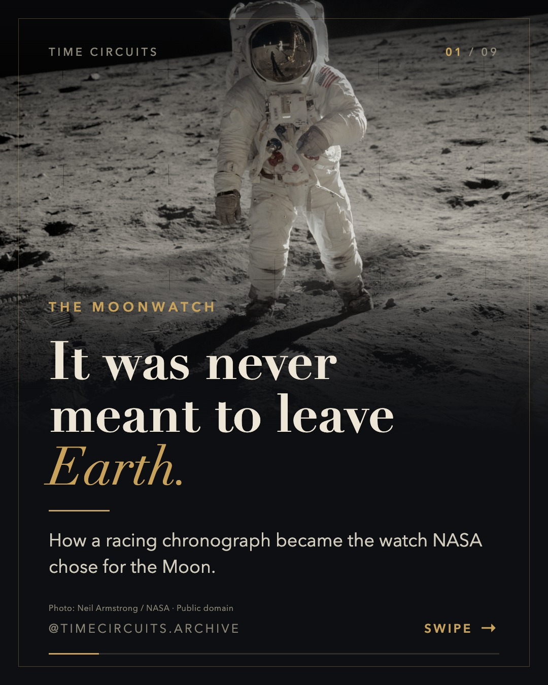
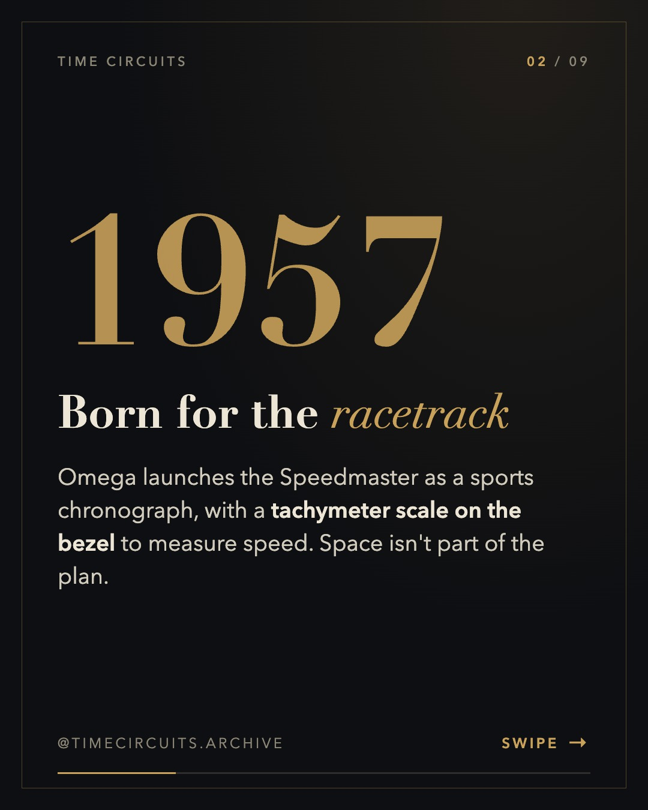
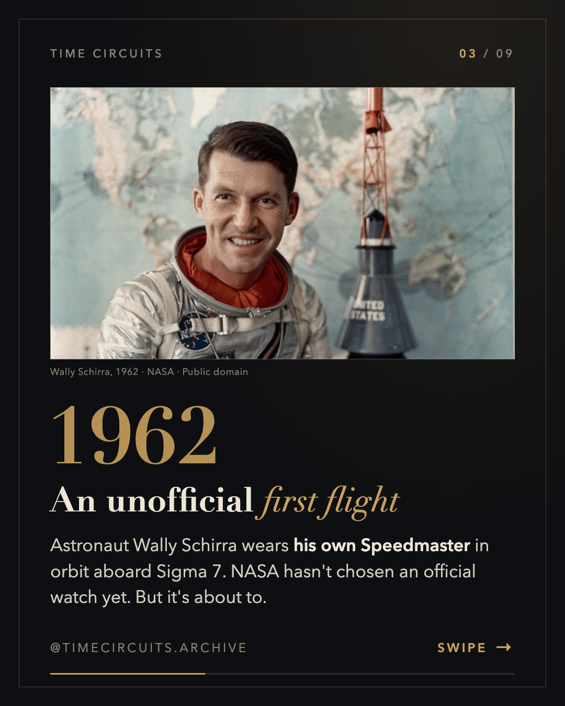
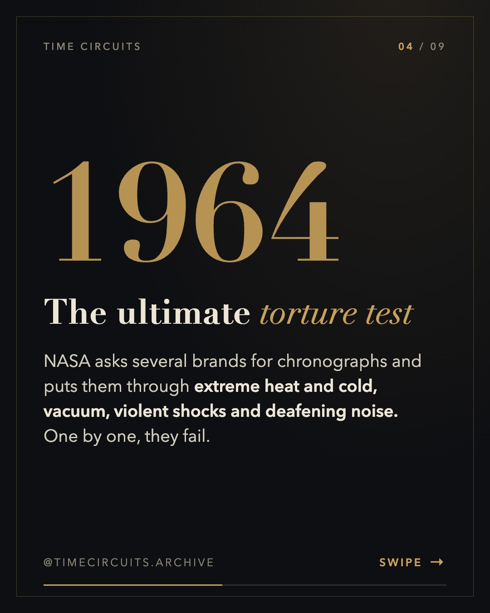
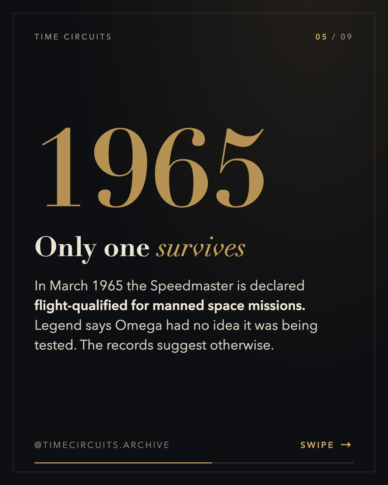
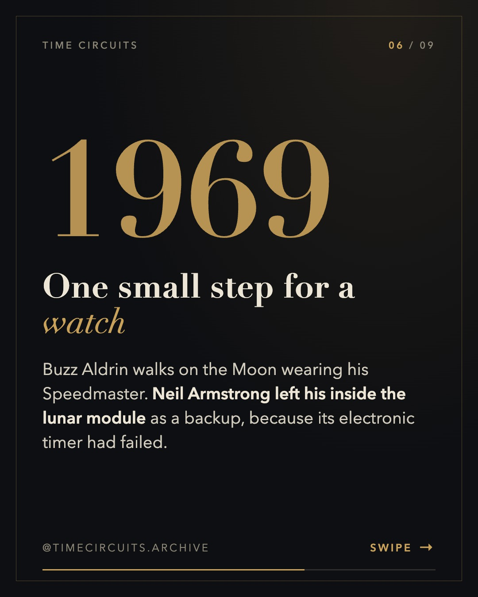
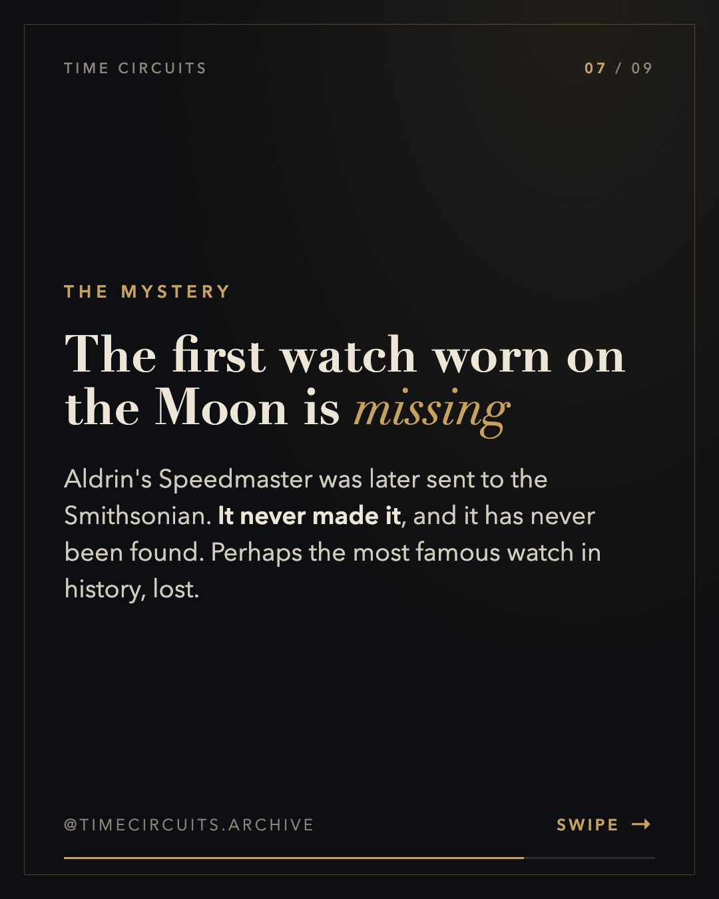
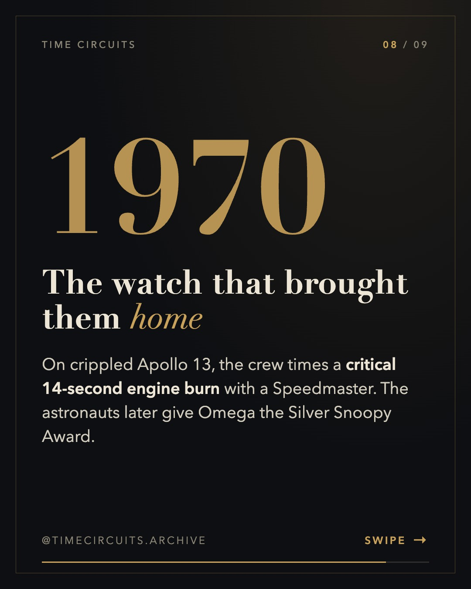
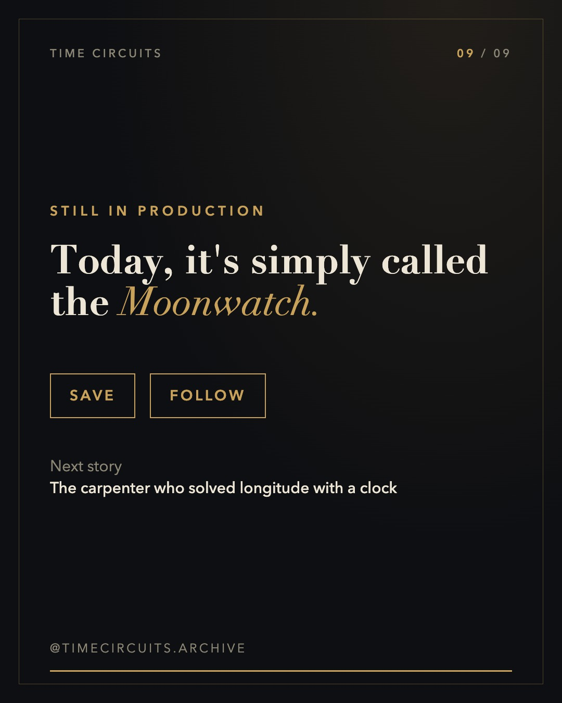

Omega Speedmaster: from racetrack to the Moon









Caption
It started as a racing chronograph. It ended up on the Moon. 🌕 In 1964 NASA put chronographs from several brands through heat, cold, vacuum and shock. Only the Omega Speedmaster survived. Five years later, Buzz Aldrin wore one on the lunar surface, and that watch has been missing ever since. Which detail surprised you most? 👇 Sources: Omega; collectSPACE; Wikipedia. #omegaspeedmaster #moonwatch #watchhistory #horology #omega #apollo11 #spacehistory #vintagewatches #watchesofinstagram
Sources
- Omega Speedmaster (overview): https://en.wikipedia.org/wiki/Omega_Speedmaster
- Omega — 1965, NASA tests and qualifies the Speedmaster: https://www.omegawatches.com/chronicle/1965-nasa-tests-and-qualifies-the-speedmaster
- Omega — 1970, the Silver Snoopy Award: https://www.omegawatches.com/chronicle/1970-the-silver-snoopy-award
- collectSPACE — Aldrin's missing Speedmaster: https://www.collectspace.com/news/news-101303a-buzz-aldrin-apollo-11-omega-speedmaster-missing-lawsuit.html
- Fratello — 60 years since NASA flight qualification: https://www.fratellowatches.com/celebrating-60-years-of-the-omega-speedmaster-becoming-nasa-flight-qualified/
Notes for approval
- Independent fact-check (fact-checker subagent): PASS WITH FIXES → all required fixes applied. See factcheck.md.
- Earlier self-check: removed the disputed 'Houston shop' story; 'Omega didn't know' is framed as a legend.
- Photos: NASA, public domain.